Gefahrstoffe
|
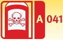 |
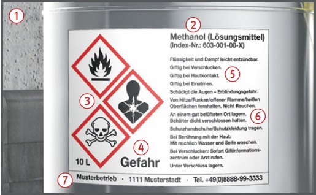
GHS-Tabelle (Auszug) 
| GHS- Gefahrenpiktogramm |
GHS-Kürzel | Mögliche Signalwörter | Gefahrenklassen |
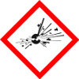 |
GHS01 | Gefahr oder Achtung | explosive Stoffe/Gemische und Erzeugnisse mit Explosivstoff, selbstzersetzliche Stoffe/Gemische, organische Peroxide |
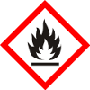 |
GHS02 | Gefahr oder Achtung | Selbstzersetzliche Stoffe/Gemische, organische Peroxide, entzündbare Gase, Aerosole, Flüssigkeiten, Feststoffe,selbsterhitzungsfähige Stoffe/Gemische, pyrophore Flüssigkeiten und Feststoffe, Stoffe/Gemische, die bei Berührung mit Wasser entzündbare Gase bilden |
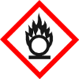 |
GHS03 | Gefahr oder Achtung | Oxidierende Gase, Flüssigkeiten, Feststoffe |
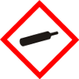 |
GHS04 | Achtung | Verdichtete, verflüssigte, gelöste und tiefgekühlt verflüssigte Gase |
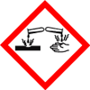 |
GHS05 | Gefahr oder Achtung | Verätzung der Haut, schwere Augenschäden, auch metallkorrosive Eigenschaften |
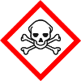 |
GHS06 | Gefahr | Äußerst schwere und schwere akute Gesundheitsschäden oder Tod |
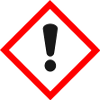 |
GHS07 | Achtung | Akute Gesundheitsschäden, Reizung der Haut, der Augen und der Atemwege, Sensibilisierung der Haut, narkotisierende Wirkungen |
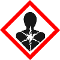 |
GHS08 | Gefahr oder Achtung | chronische Gesundheitsschäden (Organschädigungen) bei einmaliger oder mehrmaliger Exposition, krebserzeugende, keimzellmutagene (erbgut verändernde) und reproduktionstoxische (fortpflanzungsgefährdende) Wirkungen, Lungen schäden durch Eindringen von Substanzen in die Lunge (Aspirationsgefahr), Sensibilisierung der Atemwege |
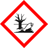 |
GHS09 | Achtung oder ohne Signalwort | giftig für Wasserorganismen mit kurz- und langfristiger Wirkung |
07/2021